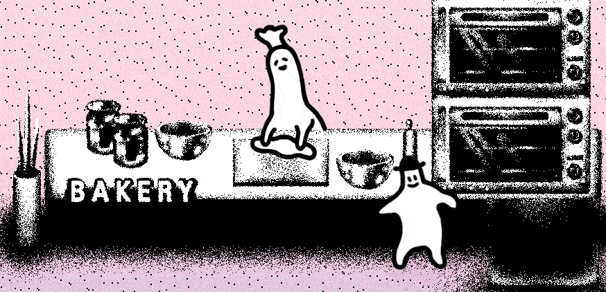

이런 취향과 아트 스타일을 가진 제가, 늘 함께 다니던 절친 눈눈이(호텔 소울즈의 프로그래밍 담당)와 게임을 만들었으니 <호텔 소울즈>가 탄생한 것은 사실 아주 자연스러운 결과겠지요.
이런 바탕에서 시작된, 처음에는 작고 가벼운 토이 프로젝트였던 <호텔 소울즈>가 스팀에 출시하는 게임이 된 데에는 역시 크라우드 펀딩의 힘이 컸습니다.
<호텔 소울즈>는 텀블벅 비디오게임 분야에서 가장 달성률이 높은(1433%) 게임입니다. (글을 쓴 2020년 6월 6일 기준입니다.)
모인 금액이 커서 그런 것이 아니라, 저희의 초기 목표 금액이 매우 낮아서였어요. 초기 목표 금액이 150만원이었거든요. (이조차도 실패할 가능성이 높다고 그 때는 생각했습니다.)
그러나 크라우드 펀딩에서 다행히 많은 후원을 받아, 게임의 규모를 키워 스팀에 무사히 출시하게 되었고 곧 닌텐도 스위치 버전 출시도 앞두고 있습니다.
이러하니 <호텔 소울즈>는 정말 자연발생(?)하여 스노우볼처럼 점점 규모를 늘리면서 개발한 게임이라고 할 수 있겠네요.
게임 개발을 하며 가장 힘들었던 점을 떠올려보면, 게임 개발 자체보다도 출시 이후의 홍보와 마케팅이 아니었나 싶어요. 스팀에 출시할 때는 퍼블리셔 없이 저희 힘으로 모든 퍼블리싱을 했기에,
작은 인디게임 팀 혼자서 글로벌 시장에 홍보하는 것은 정말 힘들다는 것을 느꼈습니다.
자원을 들여 번역을 하고 한국어 외의 언어를 지원하게 되었는데, 이를 홍보하는 능력이 모자라 슬펐어요.
마케팅에 많은 힘을 쏟기 어려운 타입의 개발자라면, 좋은 퍼블리셔와 함께 일하는 것도 괜찮은 방법 같아요.
<호텔 소울즈>를 개발하며 가장 크게 느꼈던 점은, 대부분의 상황에서 완벽주의는 제쳐 두는 게 좋다는 것이었습니다.
개발 과정에서 아쉬운 점은 참 많습니다. 저건 이렇게, 이건 저렇게 할 걸, 하고 눈에 들어오는 부분이 지금도 많아요.
그러나 그럴 때에도 용기를 내어 일단 전진하는 것이 낫다고 생각합니다. 완성이 가장 중요해요. 슬프지만 인디게임 개발자들에게는 자본과 시간의 데드라인이 존재하니까요.
또 오히려 시간과 비용상 포기하고 돌아갔던 부분들이 후에 플레이어들에게 매력 포인트로 읽히는 재밌는 경험을 하기도 했습니다.
그리고 이것저것 아쉬운 부분이 많더라도, 플레이어들이 기억할만한 재밌는 요소 한 가지라도 있다면 일단은 성공이라고 생각합니다. 재밌으라고 만드는 인디게임이니까요!

p.s. 앞서 언급하기도 했지만, <호텔 소울즈>는 곧 닌텐도 스위치로도 출시됩니다.
어릴 때부터 닌텐도 게임들을 사랑하며 컸는데, 닌텐도 스위치의 화면으로 <호텔 소울즈>를 볼 수 있게 된다니 말도 안 되게 기뻐요.
<호텔 소울즈>를 후원해주시고, 즐겁게 플레이해주신 분들께 늘 감사합니다.